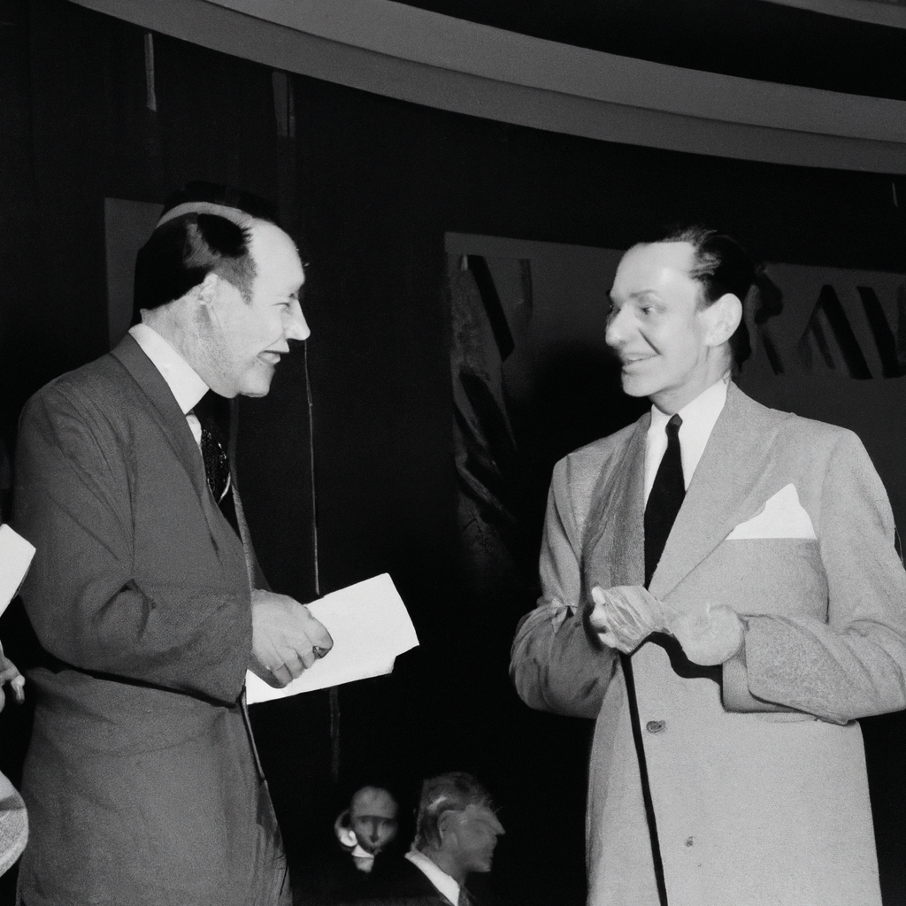
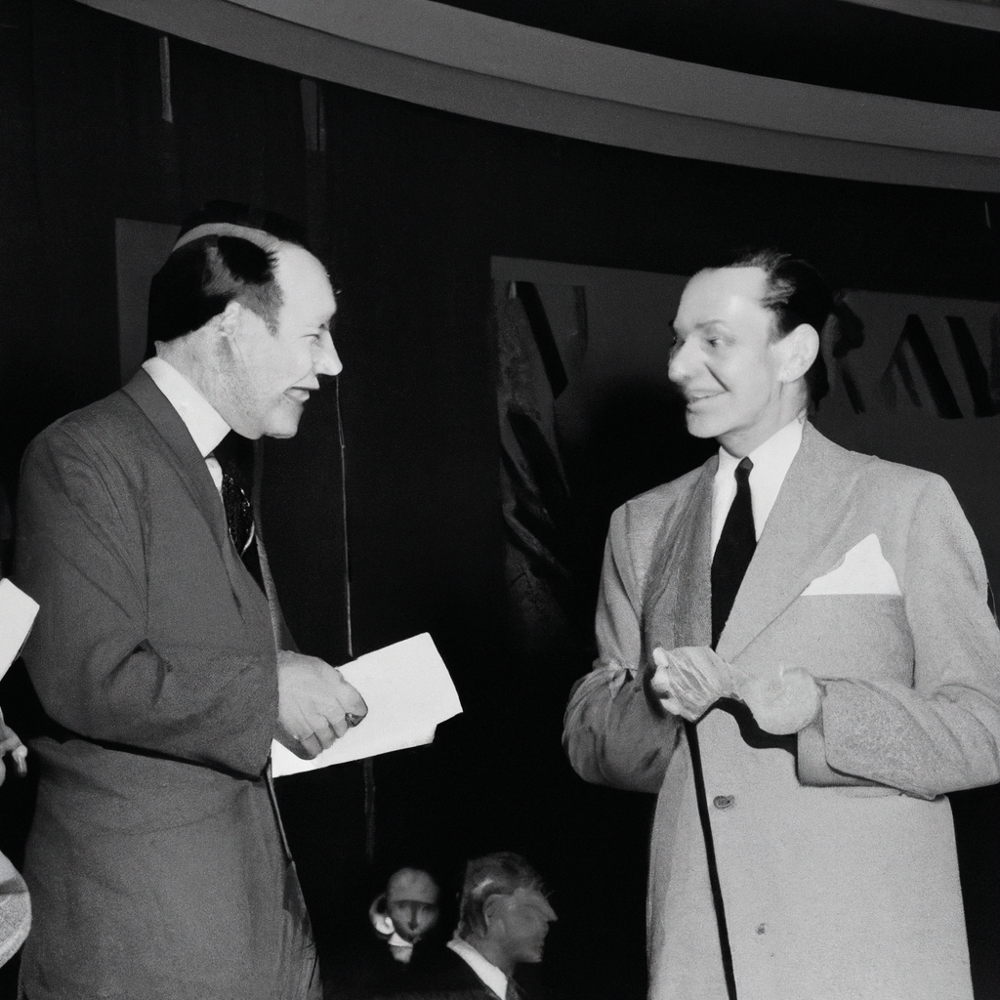
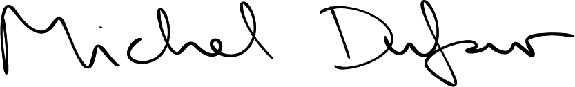

Dufour
Foundation

Buy the Book
Welcome to the Michel Dufour Foundation, an association dedicated to preserving and enhancing the legacy of the renowned graphic designer Michel Dufour. Our mission is to promote Dufour's unique contributions to the field of graphic design and to inspire future generations of designers to continue his innovative and impactful work.
Michel Dufour's approach to design was characterized by simplicity, clarity, and innovation. He believed that effective design should communicate complex ideas in a way that is both accessible and aesthetically pleasing. His work has influenced countless designers and has had a lasting impact on the field.
The Michel Dufour Foundation seeks to preserve and promote this legacy through a variety of initiatives, including exhibitions, publications, and educational programs. We are committed to ensuring that Dufour's work remains relevant and accessible to future generations, and we invite you to join us in this important endeavor.
Archive
The Michel Dufour Foundation
123 Main Street
Paris, France 75001
Phone: +33 1 23 45 67 89
Michel Dufour is a fictional graphic designer whose face, works, life and ideas were completely invented by Artificial Intelligences. ChatGPT invented his life and his monograph “Graphisme”, of which it also wrote every text. Dall-E created each of his works, based on the descriptions given by ChatGPT. Calligrapher.ai simulated his writing in his signature and in the letters between him and Paul Rand. The book was completely invented, conceptualized and wrote by ChatGPT from the following initial prompt: “Tell me the story of the greatest graphic designer no one has ever heard of.” This project was made by students Lorenzo Cicinato, Valentina Orfeo and Carlo Schlatter as a result of the workshop titled A.I. — Blessing or curse for Graphic Design?, held by Laurenz Brunner and curated by Jonathan Pierini at ISIA Urbino, march 2023.
Michel Dufour is a fictional character. Please don’t fall for scams and don’t buy his book. But if you do, buy it from us.